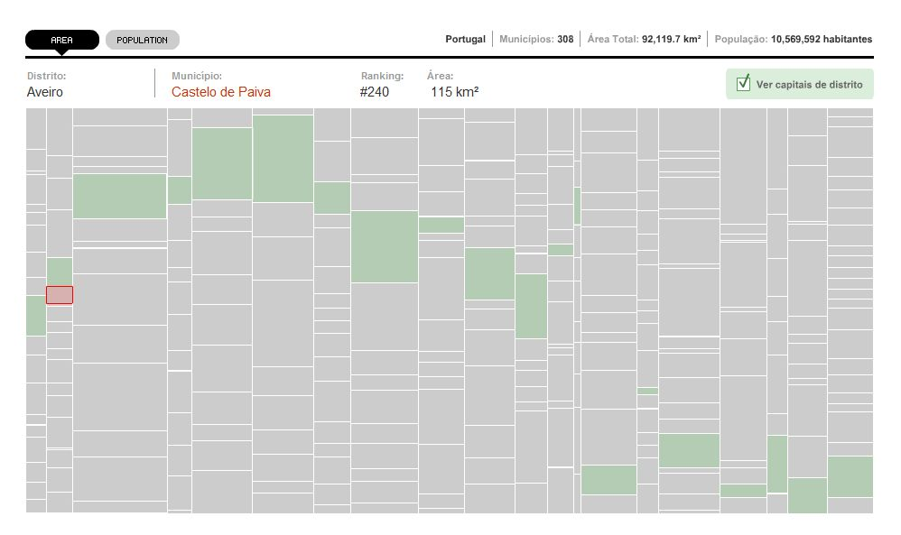
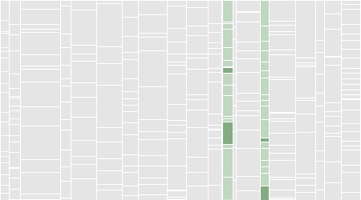
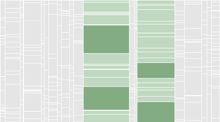

Portugal: Treemap

Este é um dos primeiros, ou porventura o primeiro exemplo da aplicação de um método de visualização Treemap à distribuição da área e população municipal portuguesa. Neste caso particular e devido à sua divisão ortogonal, este método permite um percepção imediata dos variações quantitativas entre os 308 municípios portugueses, consoante a sua área e população.
Este método criado por Ben Shneiderman, da Universidade de Maryland nos EUA, em 1991, tem sido recorrentemente usado em projectos que lidam com a visualização de informação hierárquica num espaço restrito. O seu algoritmo base tem sido também expandido em outras aplicações, tais como Circular Treemaps e Voronoi Treemaps. Os dois exemplos mais famosos do método Treemap são o Map of the Market de Martin Wattenberg e o Newsmap de Marcos Weskamp.
A verdadeira vantagem do método surge na utilização de subdivisões e inserção de variáveis estatísticas, o que será explorado futuramente em outros artigos. Esta visualização está ainda em desenvolvimento e será aperfeiçoada continuamente.
Discrepâncias (Lisboa e Porto)
| (Fig. 1) Distritos de Lisboa e Porto - Área Total | (Fig. 2) Distritos de Lisboa e Porto - População Total | |
|  |  |
Através deste método de visualização, algumas discrepâncias entre os vários distritos e municípios portugueses tornam-se óbvias. Aqui em análise pode ver-se como o distrito de Lisboa e Porto, coluna esquerda e direita respectivamente, se modificam significativamente quando se alterna entre área total (fig.1) e população (fig.2). Em destaque estão também os dois municípios mais populosos do distrito de Lisboa (Lisboa e Sintra) e do distrito do Porto (Vila Nova de Gaia e Porto) que são coincidentemente os 4 municípios mais populosos do país, perfazendo um total de 1.476.916 habitantes (14% do total nacional).
Notas:
A população total é baseada na Estimativa Anual da População Residente (INE) para o ano de 2005.
Última actualização destes dados: 28 de Março de 2007.
Sources
- INE - Instituto Nacional de Estatística
http://www.ine.pt/
- ANMP - Associação Nacional de Municípios Portugueses
http://www.anmp.pt/